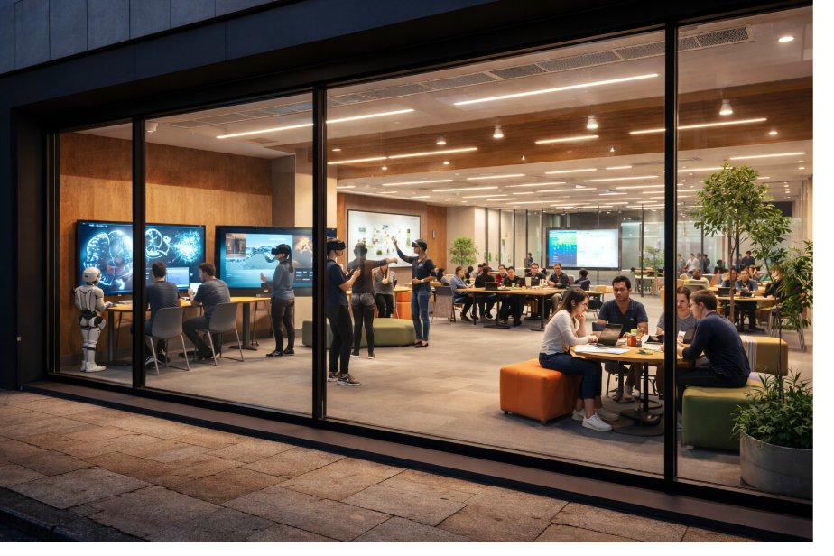
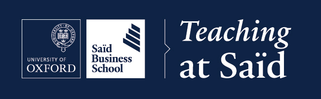

The Centre for Pedagogical Innovation advances teaching excellence at Saïd Business School through AI, immersive technology, evidence-based pedagogy, and scholarly inquiry into learning itself.
If you are interested in testing an idea, refining a teaching workflow, or exploring a partnership, this is the place to start.
The Centre for Pedagogical Innovation (CPi) is a School-wide initiative at Saïd Business School, University of Oxford. It establishes a dedicated Teaching Innovation Lab for structured experimentation with generative AI and extended reality in education.
The CPi serves faculty, researchers, students, and teaching staff at Saïd Business School, with a clear ambition to expand its reach across the wider University as the model matures. It provides a structured, low-risk environment to experiment with new teaching approaches, evaluate their effectiveness, and translate findings into publishable research and improved practice.
This is a genuinely collaborative initiative, co-designed with the School's Digital and Technology leadership, faculty champions, student representatives, and the University's AI and Machine Learning Competency Centre - with formal ties to the Centre for Teaching and Learning across the wider University.
Oxford's tutorial model is the most celebrated pedagogical model in the world. The CPi translates that ethos into the MBA and EMBA context, using AI and immersive technology to free instructors for richer interaction, not to replace it.
The CPi is built around three practical outcomes: save time, improve learning, and generate evidence that the School can actually use.
AI-supported planning, feedback, and assessment tools reduce repetitive work so faculty can spend more time on discussion, coaching, and live learning.
Interactive case studies, decision labs, and immersive environments make complex teaching more memorable, repeatable, and adaptable.
The CPi is built to test what works, measure it well, and share it across the School. Good ideas should become repeatable practice, not one-off experiments.
The Centre operates across six interconnected areas, each grounded in the Oxford and Said strategic plans, and each designed to strengthen the others and produce lasting improvements in teaching quality.
A physical and virtual space for structured experimentation with generative AI and extended reality in pedagogy - a low-risk environment for faculty to try, evaluate, and refine new teaching approaches.
A structured professional development programme helping Oxford academics understand, critique, and confidently integrate AI into their teaching - grounded in pedagogy, not technology for its own sake.
A supported environment where new teaching methods are developed, rigorously evaluated, and translated into publishable scholarship - making the CPi a home for the Scholarship of Teaching and Learning at Oxford.
Students as active co-designers of the learning experience. The CPi's Student Consultants on Teaching programme embeds student voice in pedagogical evaluation, course redesign, and AI policy - directly reflecting Oxford's commitment to an inclusive educational experience that values individual difference.
The home of Teaching at Said - recognising and systematically improving teaching quality through peer observation, faculty development, and the annual Teaching Excellence Awards.
Supporting faculty in designing assessments that work in an AI-present world - that genuinely test what they intend to test, align with Oxford policy, and develop the skills graduates need.
The CPi delivers structured programmes for faculty, students, and academic staff at Saïd Business School.
A six-module blended programme for Said academic staff, with a clear path to expand across Oxford. Covers AI fundamentals, discipline-specific applications, pedagogical integration, assessment design, ethics, and hands-on toolkit building. Aligned with Oxford's AI assessment policy.
A six-week module embedded in the Said MBA - making Said the first Oxford programme to formally require AI fluency for graduation. Covers AI strategy, data literacy, ethics, and an AI business case capstone.
A termly seminar series where Oxford's finest educators demonstrate their practice publicly. One session per term, themed around the tutorial system, AI integration, and assessment design. Co-hosted with the Oxford Centre for Teaching and Learning.
A structured programme pairing undergraduates with faculty members as pedagogical partners for one term. Students observe teaching sessions and provide structured feedback using the Oxford Student Consultant Protocol.
A formative, voluntary peer observation programme for Oxford academics. Cross-disciplinary pairs observe each other's teaching using the Oxford Peer Observation Framework - adapted for tutorials, seminars, and lectures.
The UK's reference annual conference on AI and pedagogy in higher education. Co-chaired with the Oxford Centre for Teaching and Learning, hosted at Said. Open to practitioners from across UK and European higher education.
The CPi supports five active areas of pedagogical experimentation and research - each grounded in educational evidence and evaluated rigorously before broader rollout.
Generative AI as a pedagogical co-pilot: real-time scenario generation, case-specific dialogue tools, and discussion prompts - freeing class time for deeper human engagement.
Extended reality environments where students inhabit boardroom crises, negotiate across cultures, and make decisions under pressure. AI-powered virtual case studies bring global business contexts into Said's classrooms as immersive, repeatable, and assessable experiences.
Analytics labs where student teams use AI to parse complex datasets, generate hypotheses, and learn to critically evaluate AI outputs as a core management competency.
AI tutors and feedback tools integrated with Canvas - providing formative feedback on written work and assessment briefs while reducing faculty administrative burden.
Mixed-reality connectivity that extends Said's physical classroom beyond its walls, using the School's immersive screen infrastructure alongside AI-driven engagement tools for hybrid and distributed cohorts.
Underpinning all five use cases is a formal SoTL programme: a supported environment where new teaching methods are developed, rigorously evaluated, and translated into publishable scholarship. Faculty receive seed grants and join a CPi-convened working group dedicated to research on their own teaching practice. Current CPi-supported initiatives include The Full Picture project, exploring holistic approaches to learning assessment at Said. As Oxford's Academic Career and Reward Framework introduces formal recognition for teaching excellence, the CPi gives Said faculty the evidence base and development record to progress under the new pathway.
The CPi is developing a cross-site comparative research programme on AI and pedagogy across diverse global contexts, with partner institutions in the Global South. This work is grounded in a Fulbright scholarship and published in AI and Society (2024).
The CPi operates as a virtual centre now and is designed to activate a dedicated physical Teaching Innovation Lab at Saïd Business School. The space already exists. What follows is a decision about what it becomes.

The CPi would transform The Nest into a permanent, dedicated environment for pedagogical experimentation, faculty development, AI-enhanced teaching, and scholarly research into learning itself - a space designed for the future of business education.
The CPi is led by the Head of Teaching and Learning Enhancement at Saïd Business School and co-sponsored at School leadership level.
The CPi is supported by faculty champions across FAME, SIM, and TOPOS. We welcome expressions of interest from faculty who wish to pilot CPi-supported innovations in their teaching.
The CPi has attracted interest from a range of organisations whose missions intersect with teaching innovation, AI in education, and leadership development. Formal partnership arrangements are in development.
Supporting the development of principled leadership through education; interest in CPi's approach to teaching leadership and critical thinking in the MBA context.
A nonprofit dedicated to AI for human flourishing, with an established Oxford presence through the Human-Centered AI Lab. Cosmos's intersection of philosophy, AI, and education aligns directly with the CPi's pedagogical mission.
Interest in supporting the CPi's AI infrastructure and teaching innovation lab with cloud technology and AI tooling for education research.
Named in Oxford's Strategic Plan 2025-2030 as a regional innovation partner. Interest has been expressed through Oxford leadership conversations around the CPi's AI in education agenda.
The CPi maintains an active international research partnership focused on comparative research on AI and pedagogy across global contexts, with findings published in AI and Society (2024). Additional partnerships are in development with UK and European higher education institutions.

Teaching at Said is the living community initiative that the CPi grows from and feeds back into. Launched before the CPi's formal establishment, it is the brand under which a culture of teaching excellence is being built at Said: faculty interviews, professional development workshops, a termly newsletter, and the Teaching at Said Canvas course used by academics across the School.
The CPi gives Teaching at Said its institutional infrastructure, its research rigour, and its formal mandate. Teaching at Said gives the CPi its community, its warmth, and its proof of concept.
The CPi maintains the Oxford AI Toolkit - a free, publicly accessible set of interactive tools for educators navigating AI in teaching and assessment. Built by the CPi Director, grounded in Oxford policy, and used by academics across the University.
Visit the ToolkitGenerate policy language for your course handbook, aligned with Oxford's July 2025 guidelines
Analyse your assessment for AI vulnerability and receive specific redesign options
Oxford's complete AI policy framework, redesign strategies, and implementation guidance
Key milestones as the CPi moves toward its October 2026 pilot launch and beyond.
The first cohort of student pedagogical partners begins work with Said faculty during Trinity term, using the Oxford Student Consultant Protocol.
The Centre for Pedagogical Innovation opens for its pilot phase, with 3-5 Said programmes incorporating CPi-supported AI and XR innovations in the Teaching Innovation Lab.
The first in a termly series where Oxford's finest educators demonstrate their practice publicly. Theme: the Oxford tutorial in the age of AI.
The first cohort of the AI Literacy for Educators programme launches at Saïd Business School, in partnership with the Centre for Teaching and Learning, with a view to expanding across Oxford divisions.
This section gives leadership a simple way to judge whether a pilot is worth scaling, repeating, or publishing.
Use AI to reduce preparation and admin time, while keeping faculty in control of tone, judgment, and academic standards.
Test whether XR or simulation tools improve engagement, discussion quality, and retention in selected cases or modules.
Turn successful experiments into templates, guidance, and shareable teaching assets the School can use again.
Whether you are a faculty member interested in piloting CPi innovations, a researcher exploring pedagogical questions, or an institution seeking partnership, we welcome the conversation.
David J. Dodick, Ph.D.
Head of Teaching and Learning Enhancement
Saïd Business School, University of Oxford
Saïd Business School
Park End Street, Oxford OX1 1HP